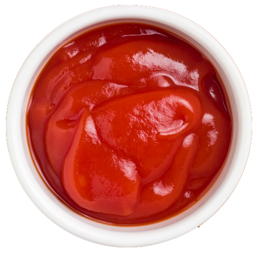
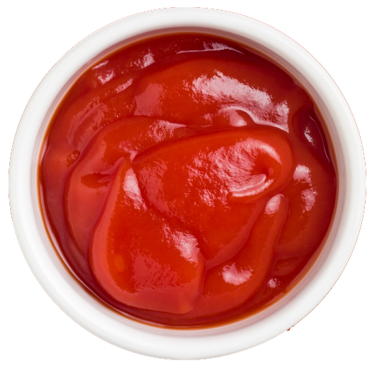

Light a fire under your taste buds
nacho cheese
Corn, Vegetable Oil (Corn, Canola, And/or Sunflower Oil), Maltodextrin (Made From Corn), Salt, Cheddar Cheese (Milk, Cheese Cultures, Salt, Enzymes), Whey, Monosodium Glutamate, Buttermilk, Romano Cheese (Part-skim Cow's Milk, Cheese Cultures, Salt, Enzymes), Whey Protein Concentrate, Onion Powder, Corn Flour, Natural And Artificial Flavor, Dextrose, Tomato Powder, Lactose, Spices, Artificial Color (Yellow 6, Yellow 5, And Red 40), Lactic Acid, Citric Acid, Sugar, Garlic Powder, Skim Milk, Red And Green Bell Pepper Powder, Disodium Inosinate, And Disodium Guanylate. CONTAIN MILK INGREDIENTS
$3.99
 
